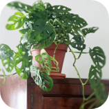
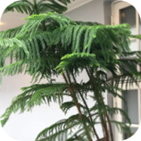
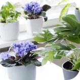

Aarnipeikonlehti - Monstera adansonii
Siro köynnöstävä peikonlehti, jolla on reikäiset ja sydämenmuotoiset lehdet. Kasvi tykkää kosteasta ilmasta.
- Veden tarve: Keskiverto
- Valon tarve: Puolivarjo
- Kasvukorkeus: 30 - 40 cm
Huonekuusi - Araucaria heterophylla
Ikivihreä havupuu, jolla on sirot ja pehmeät neulaset. Oksat lähetvät rungosta 4-5 kappaleen ryhminä rungon ympärillä. Huomioi, että kasvaessaan huonekuusi tarvitsee paljon tilaa.
- Veden tarve: Keskiverto
- Valon tarve: Puolivarjo
- Kasvukorkeus: 40 - 100 cm cm
Saintpaulia - Saintpaulia ionantha
Hyvin perinteinen ja suosittu huonekasvi. Isohkot ja paksut tummanvihreät lehdet kasvavat lehtiruusukkeena. Lehtien pinta on karvainen. Meillä saatavilla vaaleanpuna- ja siniviolettikukalliset versiot.
- Veden tarve: Keskiverto
- Valon tarve: Puolivarjo
- Kasvukorkeus: 5 - 10 cm cm